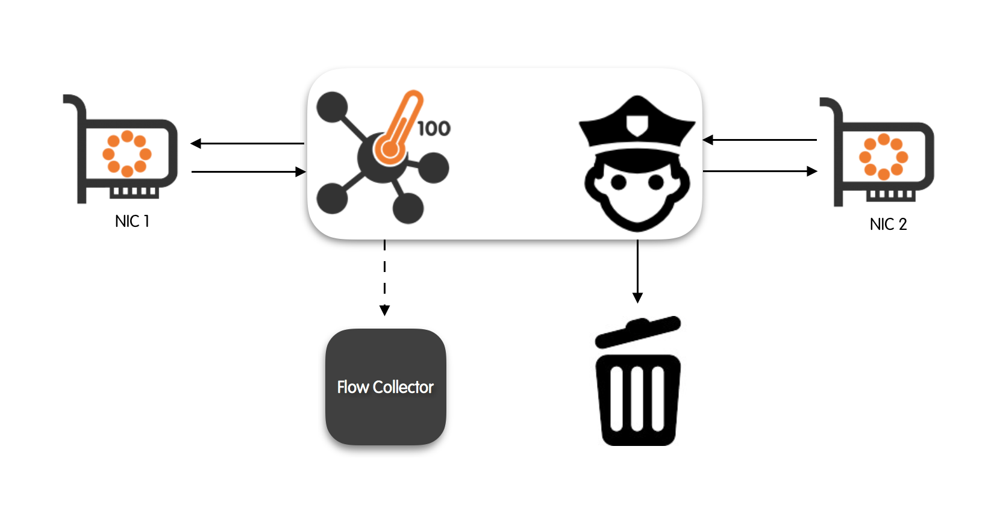

Сетевой мост
nProbe™ Cento имеет (в двоичном файле cento-bridge) режим двунаправленного моста. При работе в режиме моста nProbe™ Cento перехватывает, контролирует и (возможно) пересылает любой трафик, проходящий через пару сетевых интерфейсов. Функции экспорта потоков будут продолжать работать бесперебойно и независимо от моста.


nProbe™ Cento позволяет детально контролировать трафик через мост с помощью набора иерархических правил. Правила передаются статически с использованием текстового файла во время запуска nProbe™ Cento или динамически через REST API. nProbe™ Cento можно дать указание перечитать текстовый файл правил, отправив процессу SIGHUP (например, kill -SIGHUP <идентификатор процесса>). Это может быть полезно, например, для обновления политик моста без остановки и перезапуска процесса.
Набор правил, доступных для управления трафиком через мост, аналогичен тем, которые используются для политики выходных очередей.
Подробное описание конфигурации сетевого моста и политики приведено в оставшейся части этого раздела. Внимательный читатель заметит определенную степень совпадения с настройкой и контролем выходных очередей. Действительно, стремясь сделать nProbe™ Cento максимально удобным для использования, разработчики разработали понятный рабочий процесс, который можно практически беспрепятственно использовать как в контексте мостового соединения пакетов, так и в контексте выходных очередей.
Контроль трафика по мосту
Трафик через мост контролируется с помощью детального набора иерархических правил; фактически правила могут применяться на трех разных уровнях, а именно:
На уровне моста;
На уровне подсети;
На уровне протокола приложения.
Правила протокола приложения имеют приоритет над правилами уровня подсети, которые, в свою очередь, имеют приоритет над правилами уровня моста. Правила уровня моста можно рассматривать как правила моста «по умолчанию».
Типов правил в основном два, а именно:
Переслать: переслать пакет;
Discard: не пересылать пакет;
Пересылка означает, что трафик, полученный от сетевой карты с мостовым соединением (NIC), будет перенаправлен на другую мостовую NIC как есть, без отбрасывания, изменения или модификации. Отбрасывание означает, что трафик, полученный от моста NIC, не будет пересылаться на другой мост NIC.
Важно: если политика по умолчанию настроена на отбрасывание, трафик всегда пересылается до тех пор, пока протокол не будет обнаружен и правила на основе протокола не будут оценены. Таким же образом, если для политики по умолчанию установлена пересылка, трафик всегда пересылается до тех пор, пока протокол не будет обнаружен, даже для протоколов с политикой отбрасывания. поскольку cento требует несколько пакетов для его обнаружения. Такое поведение предусмотрено замыслом.
Правила выражаются как <полицейский объект> = <политика>. Например, тот, кто хочет соединить весь трафик NICs, будет использовать следующее выражение
default = forward
Предполагая, что исключение необходимо для отмены правила по умолчанию и удаления всего трафика, который исходит (назначается) из подсети 10.0.0.0/8, будет использоваться дополнительное правило.
10.0.0.0/8 = discard
Предположим, что необходимо еще одно исключение для отмены как правила по умолчанию, так и правила, установленного в подсети, чтобы всегда отбрасывать трафик Viber, добавим третье правило как
Viber = discard
Полный список поддерживаемых протоколов DPI можно распечатать с помощью
cento --print-ndpi-protocols
Файл конфигурации сетевого моста
Правила указываются в текстовом файле, соответствующем стандарту INI. INI — это очень простой стандарт, определяющий формат файла конфигурации. Для более подробного ознакомления со стандартом INI заинтересованный читатель может обратиться к разделу «Файл конфигурации выходных очередей», который соответствует тому же стандарту.
nProbe™ Файлы конфигурации сетевого моста Cento содержат в квадратных скобках разделы, соответствующие различным иерархическим уровням правил. Каждый раздел содержит правила, по одному в строке, которые необходимо применить. Исчерпывающий пример файла конфигурации приведен ниже.
[bridge]
default = forward
banned-hosts = discard
[bridge.subnet]
192.168.2/24 = discard
[bridge.protocol]
Skype = discard
В оставшейся части этого раздела дано описание разделов конфигурационного файла. Как уже предполагалось в примере файла конфигурации, сетевой мост настраивается с помощью трех разделов, а именно [bridge], [bridge.subnet] и [bridge.protocol]. Правила указаны в каждом разделе, по одному в строке.
[мост.протокол] содержит правила пересылки протокола приложения, которые необходимо соблюдать. Любой протокол приложения выражается с помощью мнемонической строки. Полный список доступных протоколов приложений можно просмотреть, просто запустив встроенную справку nProbe™ Cento.
cento --print-ndpi-protocols
Любая строка в этом разделе имеет формат <имя протокола> = <политика>, где политика может быть любой: пересылать и отбрасывать.
Примером является
[bridge.protocol]
Skype = discard
Viber = discard
[bridge.subnet] содержит правила переадресации, которые применяются на уровне подсети. Каждая строка в этом разделе имеет формат <CIDR подсеть> = <политика>. Подсети выражаются с использованием общепринятой нотации CIDR <адрес>/<сетевая маска>. Политика может быть любой: пересылать и отбрасывать.
Примером является
[bridge.subnet]
10.0.0.1/32 = discard
10.10.10/24 = discard
Если поток соответствует как правилу уровня подсети, так и правилу уровня протокола, то применяется правило уровня протокола.
[bridge] содержит политики моста «по умолчанию», то есть любой поток, который не соответствует ни одному правилу, указанному в разделах подсети и протокола, будет контролироваться с использованием правил «по умолчанию». Этот раздел содержит не более двух строк: одну для политики по умолчанию, а другую для политики, которая должна применяться к запрещенным хостам. Мы отсылаем читателя к разделу «Параметры командной строки» для подробного описания запрещенных хостов.
Примером является
[bridge]
default = forward
banned-hosts = discard
В приведенном выше примере все потоки, которые не контролируются правилами на уровне подсети или протокола, пересылаются, как указано в правиле по умолчанию. Если хост входит в список запрещенных хостов, то весь трафик отбрасывается.
Примечание. Правила шунтирования (раздел шунта) и нарезки (действия среза-13 или среза-14) также поддерживаются, однако они обычно не требуются в режиме моста, поскольку не имеет смысла использовать их в реальных сценариях. Если вы заинтересованы в настройке шунта или среза трафика в режиме моста, обратитесь к синтаксису, описанному в разделе «Исходящие очереди (режим IDS с использованием cento-id)».
Примеры конфигурации
Простой мост
Предполагая, что nProbe™ Cento необходимо использовать для соединения интерфейсов ZC eth1 и eth2 с использованием файла конфигурации Bridge.example и файла списка запрещенных хостов Banban.example, можно использовать следующую команду
cento-bridge -i zc:eth1,zc:eth2 --bridge-conf bridge.example --banned-hosts banned.example --dpi-level 2 -v 4
Разгрузка Техаса
Конфигурацию моста можно оптимизировать на выбранных адаптерах для достижения наилучшей производительности пересылки пакетов. Например, адаптеры Napatech поддерживают передачу с копированием zero, это означает, что полученные пакеты можно пересылать. аппаратно, разгружая копию пакета. Эту поддержку следует включить при настройке адаптера, используя инструмент ntpl и может комбинироваться с потоками для распределения нагрузки на несколько ядер.
Ниже приведен пример сценария «tx-offload.ntpl», который можно использовать для настройки двух потоков на порту 0. и перенаправить трафик на порт 1.
Delete=All
HashMode[Priority = 0; Layer4Type=TCP,UDP,SCTP] = Hash5TupleSorted
HashMode[Priority = 1; Layer3Type=IP] = Hash2TupleSorted
Setup[NUMANode=0] = StreamId==(0..1)
Setup[TxDescriptor = DYN1; TxPorts = 1; TxIgnorePos = 141] = StreamId == (0..1)
Assign[StreamId = (0..1); Descriptor = DYN1] = Port == 0
Команда загрузки NTPL-скрипта в адаптер:
sudo /opt/napatech3/bin/ntpl -f tx-offload.ntpl
Чтобы включить разгрузку TX в nProbe Cento, --tx-offload опция доступна. В приведенном ниже примере
nProbe Cento настроен на создание 2 потоков захвата, по одному на каждый поток, и пересылку всего трафика на порт 1.
согласно правилам, настроенным в файле Rules.conf.
cento-bridge -i nt:stream[0-1],nt:1 --tx-offload --dpi-level 2 --bridge-conf rules.conf
Пример файла конфигурации правил для отсеивания видеотрафика от выбранных приложений:
[bridge]
default = forward
banned-hosts = discard
[bridge.protocol]
NetFlix = discard
YouTube = discard
Разгрузка пересылки потока
Обработку трафика можно дополнительно оптимизировать путем выгрузки правил потока на адаптер, на адаптерах. с аппаратным диспетчером потоков (Napatech). Это позволяет разгрузить правила переадресации трафика на пересылать или отбрасывать все пакеты для определенного потока, что значительно снижает нагрузку на CPU. Cento разгружает потоки на адаптер, как только обнаруживается протокол приложения (это требуется несколько пакетов для каждого потока, в зависимости от фактического протокола).
Примечание. Для использования разгрузки потока на адаптере требуется встроенное ПО с поддержкой Flow Manager.
Ниже приведен пример сценария «flow-offload.ntpl», который можно использовать для настройки 4 потоков для пересылать трафик между портами 0 и 1 в обоих направлениях. Этот скрипт также совместим с TX Offload. (--tx-offload), а также может использоваться с одновременно включенной разгрузкой потока и разгрузкой TX.
Delete = All
// Pair of uplink and downlink ports
Define UL_PORT = Macro("0")
Define DL_PORT = Macro("1")
// Streams / threads
Define STREAMS = Macro("(0..3)")
Define NUMA = Macro("0")
Define TX_FORWARD = Macro("0x00")
Define TX_DISCARD = Macro("0x08")
Define FLM_HIT = Macro("0x00")
Define FLM_MISS = Macro("0x10")
Define FLM_UNHANDLED = Macro("0x20")
Define FLM_DISCARD = Macro("3")
Define FLM_FORWARD = Macro("4")
Define isIPv4 = Macro("Layer3Protocol==IPv4")
Define isTcpUdp = Macro("Layer4Protocol==TCP,UDP")
KeyType[Name=KT_4Tuple] = {32, 32, 16, 16}
Define KeyDefProtoSpec = Macro("(Layer3Header[12]/32, Layer3Header[16]/32, Layer4Header[0]/16, Layer4Header[2]/16)")
KeyDef[Name=KD_4Tuple; KeyType=KT_4Tuple; IpProtocolField=Outer; KeySort=Sorted] = KeyDefProtoSpec
HashMode = Hash5TupleSorted
Setup[NUMANode=NUMA] = StreamId == STREAMS
// Tx port number is the first 3 bits of the NtDyn1Descr_s->color at offset 138 (0b000XXX)
// Tx forward/discard verdict is bit 4 of the NtDyn1Descr_s->color at offset 141 (0b00X000)
Setup[TxDescriptor=DYN; TxPorts=UL_PORT,DL_PORT; TxPortPos=138; TxIgnorePos=141] = StreamId==STREAMS
// Set TX port value, which is the first 3 bits of the NtDyn1Descr_s->color
Assign[ColorMask=DL_PORT; Descriptor=DYN1] = Port==UL_PORT
Assign[ColorMask=UL_PORT; Descriptor=DYN1] = Port==DL_PORT
// Set TX forward/discard, which is bit 4 of the NtDyn1Descr_s->color
Assign[ColorMask=TX_FORWARD; Descriptor=DYN1] = Port==UL_PORT,DL_PORT
// New and unhandled flows are sent to the host
Assign[StreamId=STREAMS; ColorMask=FLM_UNHANDLED; Descriptor=DYN1] = Port==UL_PORT,DL_PORT AND isIPv4 AND isTcpUdp AND Key(KD_4Tuple, KeyID=1) == UNHANDLED
Assign[StreamId=STREAMS; ColorMask=FLM_MISS; Descriptor=DYN1] = Port==UL_PORT,DL_PORT AND isIPv4 AND isTcpUdp AND Key(KD_4Tuple, KeyID=1) == MISS
// Drop discarded flows
Assign[StreamId=DROP] = Port==UL_PORT,DL_PORT AND isIPv4 AND isTcpUdp AND Key(KD_4Tuple, KeyID=1) == FLM_DISCARD
// Forward allowed flows between ports
Assign[StreamId=Drop; DestinationPort=DL_PORT] = Port==UL_PORT AND isIPv4 AND isTcpUdp AND Key(KD_4Tuple, KeyID=1) == FLM_FORWARD
Assign[StreamId=Drop; DestinationPort=UL_PORT] = Port==DL_PORT AND isIPv4 AND isTcpUdp AND Key(KD_4Tuple, KeyID=1) == FLM_FORWARD
Примечание: приведенный выше NTPL аналогичен конфигурации пассивного захвата. ColorMask=TX_FORWARD назначение.
Команда загрузки NTPL-скрипта в адаптер:
sudo /opt/napatech3/bin/ntpl -f flow-offload.ntpl
Чтобы включить разгрузку потока в nProbe Cento, --flow-offload опция доступна. В приведенном ниже примере
nProbe Cento настроен на создание 4 потоков захвата, по одному на каждый поток, и пересылку трафика в соответствии с правилами.
настроено в файле Rules.conf.
cento-bridge -i nt:stream[0-3],nt:stream[0-3] --tx-offload --flow-offload --dpi-level 2 --bridge-conf rules.conf
Пример файла Rules.conf для отбрасывания видеотрафика от выбранных приложений:
[bridge]
default = forward
banned-hosts = discard
[bridge.protocol]
NetFlix = discard
YouTube = discard
Среда выполнения сетевого моста REST Конфигурация API
nProbe™ Cento был разработан для динамической настройки сетевого моста с помощью REST API. Это API, который обеспечивает тот же уровень гибкости, которого можно достичь с помощью файла конфигурации.
Пожалуйста, обратитесь к API Документация раздел для полной спецификации API.
Дополнительные ресурсы
Дополнительные примеры конфигурации для Napatech (TX Offload и Flow Offload) доступны в демо-репозиторий от Napatech.